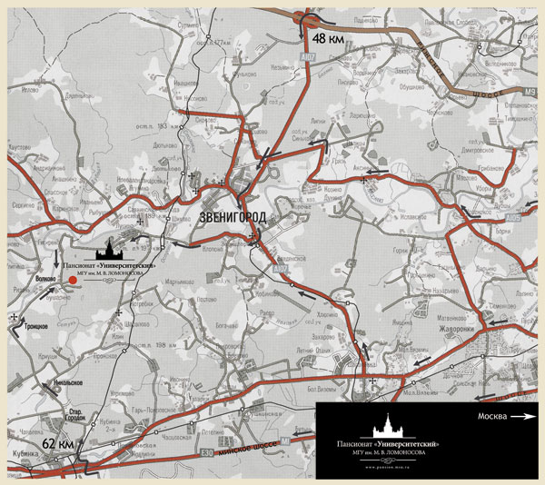

|  |
|
|
Проезд на автомобиле
Новорижское шоссе: на 48 км поворот направо на Звенигород. В Звенигороде по мосту пересечь Москва-реку, на первом перекрестке направо и далее проездом через Шихово, Луцино и Гигирево.
Рублево-Успенское шоссе: на 20 км поворот направо на Николину Гору, затем по указателям до Звенигорода. Далее до дер. Волково проездом через Шихово, Луцино и Гигирево.
Можайское шоссе: проездом через Одинцово до поста ГАИ в Малых Вязьмах. Затем направо на Звенигород. После ж/д станции Звенигород первый поворот налево, далее 19 км прямо до дер. Волково.
Проезд на общественном транспорте